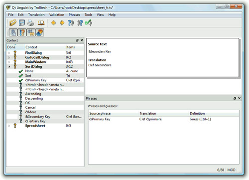

|
|
Translating a Qt application that contains tr() calls is a three-step process:
|
1.
|
|
|
2.
|
|
|
3.
|
Steps 1 and 3 are performed by application developers. Step 2 is handled by translators. This cycle can be repeated as often as necessary during the application's development and lifetime.
As an example, we will show how to translate the Spreadsheet application in Chapter 3. The application already contains tr() calls around every user-visible string.
First, we must modify the application's .pro file slightly to specify which languages we want to support. For example, if we want to support German and French in addition to English, we would add the following TRANSLATIONS entry to spreadsheet.pro:
TRANSLATIONS = spreadsheet_de.ts \
spreadsheet_fr.ts
Here, we specify two translation files: one for German and one for French. These files will be created the first time we run lupdate and are updated every time we subsequently run lupdate.
These files normally have a .ts extension. They are in a straightforward XML format and are not as compact as the binary .qm files understood by QTranslator. It is lrelease's job to convert human-readable .ts files into machine-efficient .qm files. For the curious, .ts stands for "translation source" and .qm for "Qt message" file.
Assuming that we are located in the directory that contains the Spreadsheet application's source code, we can run lupdate on spreadsheet.pro from the command line as follows:
lupdate -verbose spreadsheet.pro
The -verbose option tells lupdate to provide more feedback than usual. Here's the expected output:
Updating 'spreadsheet_de.ts'...
Found 98 source texts (98 new and 0 already existing)
Updating 'spreadsheet_fr.ts'...
Found 98 source texts (98 new and 0 already existing)
Every string that appears within a tr() call in the application's source code is stored in the .ts files, along with an empty translation. Strings that appear in the application's .ui files are also included.
The lupdate tool assumes by default that the arguments to tr() are Latin-1 strings. If this isn't the case, we must add a CODECFORTR entry to the .pro file. For example:
CODECFORTR = EUC-JP
This must be done in addition to calling QTextCodec::setCodecForTr() from the application's main() function.
Translations then need to be added to the spreadsheet_de.ts and spreadsheet_fr.ts files using Qt Linguist. (Figure 18.2 shows Qt Linguist in action.)

To run Qt Linguist, click Qt by Trolltech v4.x.y|Linguist in the Start menu on Windows, type linguist on the command line on Unix, or double-click Linguist in the Mac OS X Finder. To start adding translations to a .ts file, click File|Open and choose the file to translate.
The left-hand side of Qt Linguist's main window shows a tree view. The top-level items are the contexts of the application being translated. For the Spreadsheet application, these are "FindDialog", "GoToCellDialog", "MainWindow", "SortDialog", and "Spreadsheet". Every context has zero or more child items. Each child item occupies three columns, the first showing a Done flag, the second showing a source text, and the third showing any translation. The top-right area shows the current source text and its translation; this is where translations are added and edited. The bottom-right area is a list of suggestions automatically provided by Qt Linguist.
Once we have a translated .ts file, we need to convert it to a binary .qm file for it to be usable by QTranslator. To do this from within Qt Linguist, click File|Release. Typically, we would start by translating only a few strings and run the application with the .qm file to make sure that everything works properly.
If we want to regenerate the .qm files for all .ts files, we can use the lrelease tool as follows:
lrelease -verbose spreadsheet.pro
Assuming that we translated 19 strings to French and clicked the Done flag for 17 of them, lrelease produces the following output:
Updating 'spreadsheet_de.qm'...
Generated 0 translations (0 finished and 0 unfinished)
Ignored 98 untranslated source texts
Updating 'spreadsheet_fr.qm'...
Generated 19 translations (17 finished and 2 unfinished)
Ignored 79 untranslated source texts
Untranslated strings are shown in the original languages when running the application. The Done flag is ignored by lrelease; it can be used by translators to identify which translations are finished and which ones must be revisited.
When we modify the source code of the application, the translation files may become out of date. The solution is to run lupdate again, provide translations for the new strings, and regenerate the .qm files. Some development teams find it useful to run lupdate frequently, whereas others prefer to wait until the application is almost ready to release.
The lupdate and Qt Linguist tools are quite smart. Translations that are no longer used are kept in the .ts files in case they are needed in later releases. When updating .ts files, lupdate uses an intelligent merging algorithm that can save translators considerable time with text that is the same or similar in different contexts.
For more information about Qt Linguist, lupdate, and lrelease, refer to the Qt Linguist manual at http://doc.trolltech.com/4.3/linguist-manual.html. The manual contains a full explanation of Qt Linguist's user interface and a step-by-step tutorial for programmers.
|
|
| Converted from CHM to HTML with chm2web Pro 2.85 (unicode) |